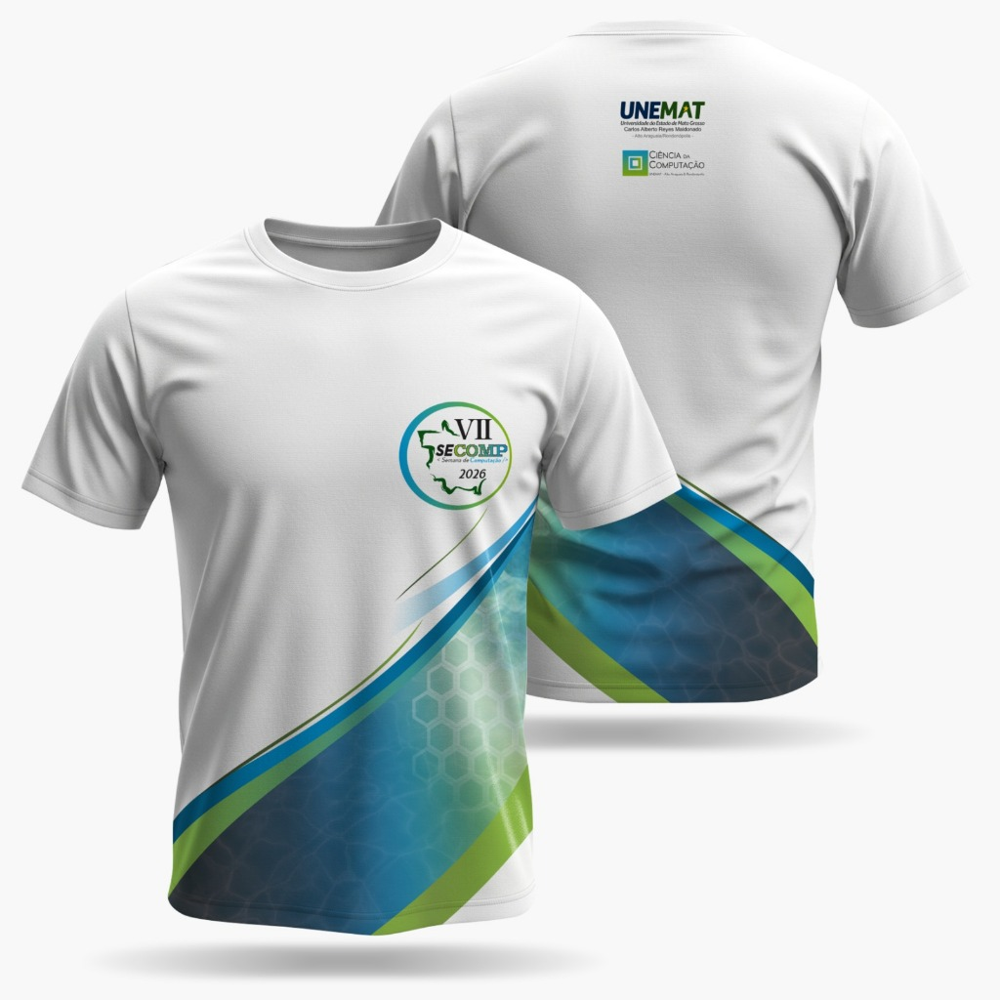

VII Semana de Computação
SECOMP 2026
"Conectando Inteligências: Do Campus ao Ecossistema Global"

Edição Oficial VII SECOMP 2026Garanta a sua Camiseta Oficial BCC UNEMAT
Camiseta comemorativa com design exclusivo da VII Semana de Computação e marcas institucionais da UNEMAT e Ciência da Computação. Pagamento exclusivo via PIX com preço único e retirada presencial na Sala PIXEL.
Sobre o Evento
A VII Semana de Computação (SECOMP) consolida-se como o maior fórum de convergência tecnológica e inovação da região sul de Mato Grosso. Sediado em Rondonópolis, o evento atua como um catalisador vital para a região, face às rápidas exigências técnicas da Indústria 4.0 e do Agro 5.0.
A proposta promove uma integração intercampi inédita, unificando as delegações de todos os campi da Universidade do Estado de Mato Grosso que ofertam cursos na área de tecnologia: Alto Araguaia, Barra do Bugres, Cáceres, Sinop, Lucas do Rio Verde e Rondonópolis.
O evento transcende a academia, focando-se na conversão de conhecimento em inovação através de competições tecnológicas, Demodays de Startups, rodadas de recrutamento (Speed Recruiting) e um rigoroso Congresso Científico com publicações indexadas. Conta com o apoio institucional da Sociedade Brasileira de Computação (SBC).
Inclusão e Diversidade
Ações como o projeto CodePink, visando atrair e reter talentos femininos nas ciências exatas com painéis de liderança feminina na TI.
Trilha EduTech
Capacitação de professores da rede básica focada no uso de robótica de baixo custo e Inteligência Artificial em sala de aula.
Programação Prévia
Garanta sua vaga nas oficinas, minicursos e palestras da SECOMP 2026. As vagas são limitadas!
Infraestrutura do Evento
Ver Mapa do Campus
Fim de Semana de Inovação (06 e 07 de junho)
06 de junho (Sábado)
Bloco 3 - Sala 5
40 vagasBloco 3 - Sala 3
40 vagasConvidado: Prof. Dr. Nelcileno Araújo (UFMT)
Lab. de Informática I - Bloco 3
0 vagas disponíveisHackathon Oficial da SECOMP.
Coordenação: Diretor Dhyego Brandão (TIU)
Atividades: Desenvolvimento de software, mentorias e ideação.
Inscrições: Clique aqui para se inscrever no HackaTIU.
Regulamento: Leia o regulamento completo (PDF).
Auditório Quero-Quero
Bloco 1 - Lab. Línguas
Bloco 1 - Sala 1
07 de junho (Domingo)
Coordenação: Diretor Dhyego Brandão (TIU)
Atividades: Finalização, mentorias e pitch final dos projetos.
Regulamento: Leia o regulamento completo (PDF).
Auditório Quero-Quero
Bloco 1 - Lab. Línguas
Bloco 1 - Sala 1
Auditório Coraci
- 🎟️ Ingresso: R$ 10,00 + 1kg de alimento não perecível (Ação Solidária!).
- 👗 Link: Clique aqui para acessar o formulário de inscrição e pagamento.
- 🏆 Premiação: Os valores arrecadados serão revertidos em premiação.
- 📜 Regulamento: Leia o regulamento completo (PDF).
- 👶 Menores de 18 anos: Baixe o termo de autorização obrigatório (PDF).
Ver Post Oficial no Instagram
Abertura Oficial e Trilhas (08 de junho - Segunda-feira) Encerrado
Convidado: Iago Cruz (UNEMAT)
Lab. de Informática II - Bloco 2
0 vagas disponíveisBloco 4 - Sala 5
Convidada: Profa. Waghna Rodrigues Duarte
Bloco 1 - Lab. Línguas
20 vagasHall do Auditório Coraci
Auditório Coraci
Convidada: Aline Catiusce (Hisower / Softsul Informática)
Auditório Coraci
250 vagasHall do Auditório Coraci
Convidado: Me. Douglas Machado Ramos (INPI)
Auditório Coraci
250 vagas
IA, Educação e Prática (09 de junho - Terça-feira) Encerrado
Convidada: Camila Krauspenhar
Bloco 3 - Sala 2
0 vagas disponíveisBloco 4 - Sala 5
Hall do Auditório Coraci
Bloco 1 - Lab. Línguas / Bloco 1 - Sala 5
Bloco 1 - Sala 1
Convidado: Henzo Anjos (UFMT)
Bloco 3 - Sala 4
40 vagasOrganização: ATTO Intelligence
Bloco 3 - Sala 5
40 vagasAuditório Coraci
Convidada: Profa. Dra. Leila Ribeiro (Diretora de Computação na Educação Básica da SBC)
Auditório Coraci
250 vagasConvidado: Prof. Dr. Benevid Felix
Coordenador - Agrocomputação (UNEMAT - Lucas do Rio Verde).
Bloco 3 - Sala 3
40 vagasHall do Auditório Coraci / Hall Quero-quero
Convidada: Anna Paula (Núcleo de Inteligência da Polícia Regional)
Auditório Coraci
250 vagasConvidado: Prof. Me. Márcio Martins (IFMT Rondonópolis)
Bloco 3 - Sala 3
40 vagas
Drones e Ciência Acadêmica (10 de junho - Quarta-feira) Encerrado
Bloco 4 - Sala 5
Auditório Coraci
Auditório Coraci
Convidado: Prof. Dr. Willians Mendes (IFMT Primavera do Leste)
Bloco 3 - Sala 5
40 vagasBloco 1 - Sala 5
20 vagasConvidada: Thamirys Gameiro
Representando a WoMakersCode, a maior comunidade de mulheres na tecnologia da América Latina.
Lab. de Informática I - Bloco 3
20 vagasConvidado: Pedro Bastos (Meta)
Lab. de Informática II - Bloco 2
0 vagas disponíveisConvidado: Emmanuel Fortes (PIXEL)
Bloco 1 - Lab. Línguas
0 vagas disponíveisConvidado: A definir (ATTO )
Bloco 3 - Sala 3
40 vagasConvidado: Patrick Miranda
Bloco 3 - Sala 2
40 vagasHall do Auditório Coraci
Encerramento (11 de junho - Quinta-feira)
Convidado: Prof. Me. Dárley Domingos (IFMT)
Lab. de Informática II - Bloco 2
0 vagas disponíveisDiretamente nas salas
Convidada: Natalia Silva (UFR)
Bloco 3 - Sala 5
40 vagasConvidado: Emmanuel Fortes (PIXEL)
Bloco 1 - Lab. Línguas
0 vagas disponíveisConvidado: Marcus Mastelaro (ATTO Intelligence)
Bloco 3 - Sala 3
40 vagasA definir
Convidada: Cássia Lopes
Bloco 1 - Sala 5
40 vagasHall Quero-quero
Convidada: Thamirys Gameiro
Representando a WoMakersCode, a maior comunidade de mulheres na tecnologia da América Latina.
Bloco 3 - Sala 4
40 vagasConvidada: Ana Lucia Linhares
Professores do ensino fundamental.
Bloco 1 - Sala 5
40 vagasBloco 3 - Sala 2
30 vagas
Atrações Contínuas (De 08 a 11 de junho)
Disponíveis durante todo o evento para interação dos participantes:
Atrações Contínuas (De 08 a 11 de junho)
Disponíveis durante todo o evento para interação dos participantes:
CodMaker (Lages - SC)
Aprendizado prático e dinâmico, com metodologia maker.
- Montagem de projetos reais de robótica.
- Demonstrações e aplicações práticas de Inteligência Artificial.
- Programação ao vivo com orientação de Professores Facilitadores.
- Como a IA pode transformar o ensino e a criação de conteúdo.
Apresentação de Artigos e Resumos aprovados via JEMS (Selo SBC/SOL).
Exposição interativa e itinerante focada na difusão científica.
Mostra tecnológica com foco em projetos de robótica.
Interaja de perto com as máquinas desenvolvidas pelo ecossistema acadêmico.
Verifique os horários na grade diária e acesse o regulamento oficial.
Baixar RegulamentoPainéis e ações focadas em inspirar a presença feminina na tecnologia.
Sessões Científicas
Cronograma de apresentação dos trabalhos aprovados.
Sessão 1: Segunda-feira, 08/06 (9:00 - 11:00) Encerrado
Raul Tavares Cecatto, Siene dos Santos Rosa
Rafael Rodrigues Garcia, Francisco Eriberto de Lima Nascimento
Léo Walker da Silva, Melissa Rodrigues, Mayza Fidelis
Emilli Dias de Oliveira, Leticia Nascimento, Maria Vittoria Sousa Rodrigues Palma, Gracyeli Guarienti
Emilli Dias de Oliveira, Gracyeli Guarienti, Carolina Peruare Ferreira, Carolina Sartori, Karine Pinheiro Lopez, Mylena Fernandez, Geovana Duarte, Maressa Machado
Emilli Dias de Oliveira, Letízia Manuella Serqueira Eugenio, Carlos Eduardo Rehbein de Souza, Nelcileno Araújo
Sessão 2: Segunda-feira, 08/06 (14:00 - 16:00) Encerrado
Léo Walker da Silva, Marlon Vinícius da Silva, Weslley Pereira
Léo Walker da Silva, Melissa Rodrigues, Marlon Vinícius da Silva, Weslley Pereira, Mayza Fidelis
Rebeca Monteiro, Iasmim Lino, Yasmin Araujo, Danyele Reis, Kairo Machado, Marcos Antônio Pereira de Souza Mila, Pedro Rafael, Daniel Domingos Alves, Elia Rodrigues, Raquel Victória Vieira Alvares
Éder de Oliveira, Mara Andréa Dota, Roger Resmini, Eloá Lima de Oliveira Portela
Melissa Rodrigues, Léo Walker da Silva, Marlon Vinícius da Silva
Letízia Manuella Serqueira Eugenio, Jean Caminha
Sessão 3: Terça-feira, 09/06 (9:00 - 11:00) Encerrado
Jemy Alex Mnadujano Valle, Célia Hiromi Watanabe, Talita Oliveira Leite Sete, Ylma Cristina Souza Lopes
Gustavo Henrique, Carlinho Viana de Sousa, Antuane Lopes
Gustavo Henrique, Dean Novais, Jessica Gonçalves
Dean Novais, Jessica Gonçalves, Gustavo Henrique
André Moacir Pessi, Odilon Lima Araújo, Juliane Gonçalves Veras, Ezequiel Severiano da Silva, Daniel Ataide Leite Campos, Jorge Jodi Yamada, Luís Otávio Perin
Jemy Alex Mnadujano Valle, Mariano Lino da Silva Neto, Marcos Aurelio Bastos Stanguerlin, Yeny Luz Asto Alanya
Sessão 4: Terça-feira, 09/06 (14:00 - 16:00) Encerrado
Allan Francisco
Natalia Ayumi Shimizu da Silva, Waine Teixeira Júnior
Mayza Fidelis, Léo Walker da Silva
Mateus Silva
Trabalho #25628 transferido para Segunda-feira 15:40h
Sessão 5: Quarta-feira, 10/06 (9:00 - 11:00) Encerrado
Gabriela Andrade Nogueira
Luís Otávio Perin, Eduardo Oenning
Luiz Fernando Lara
Antônio Humberto Silva Fontes, Nivaldi Calonego Junior, Robson Gomes de Melo
Leandro Passos, Leandro Carbo
Célia Hiromi Watanabe, Vinícius Eduardo Lima de Assis, Markus Soares, Everton Neves dos Santos
Sessão 6: Quarta-feira, 10/06 (14:00 - 16:00) Encerrado
Patrick Moraes Souza, Max Robert Marinho, Fernando Yoiti Obana, Lucas Kriesel Sperotto
Maricy Caregnato, Kelis Estatiane de Campos
Isabela Pillar Vieira de Figueiredo, Ana Luiza Morais, Aurélio Vinícius, Matheus Henrique, Isac Gabriel Prais, Messias Leite Aires, Daniel Domingos Alves
Landara Anne Melo Zinhani
Maricy Caregnato, Rafael da Costa Candido, Alan Botelho Magalhães, Murilo Messias, Mateus Cunha Mendes Cabral
Talita Oliveira Leite Sete, Max Robert Marinho, Fernando Yoiti Obana, Lucas Kriesel Sperotto
Sessão 7: Quinta-feira, 11/06 (9:00 - 11:00)
Linda Baccin, Bruno Ormonde
Jonathan Victor da Silva Santos, Igor Petersson Cardoso e Santos, Jessyel Rosa Madalena, João Ferreira
Igor Petersson Cardoso e Santos, Jonathan Victor da Silva Santos, Jessyel Rosa Madalena, João Ferreira
Jonathan Victor da Silva Santos, Igor Petersson Cardoso e Santos, Jessyel Rosa Madalena, João Ferreira
Jonathan Victor da Silva Santos, Igor Petersson Cardoso e Santos, Jessyel Rosa Madalena, João Ferreira
Arthur Alves, Fernando Yoiti Obana, Max Robert Marinho, Lucas Kriesel Sperotto, Dailton Angelo Silva Nascimento, Feliphe Carvalho Rodrigues de Souza
Sessão 8: Quinta-feira, 11/06 (14:00 - 16:00)
Trabalho #25705 transferido para Terça-feira 10:20h
Cenez Araújo de Rezende, Allan Cardoso de Oliveira
Jonathan Victor da Silva Santos, Igor Petersson Cardoso e Santos, Jessyel Rosa Madalena, João Ferreira
Igor Petersson Cardoso E Santos, Jonathan Victor da Silva Santos, Jessyel Rosa Madalena, João Ferreira
Renata da Silva Grachet, Everton Neves dos Santos
Jairo Farias, Everton Neves dos Santos
Fabiana Simonato
Chamada de Trabalhos
Call for Papers
Submeta a sua pesquisa, minicurso ou oficina para a SECOMP 2026.
Datas Importantes
| Submissão de Artigos (Completos e Curtos) |
18/04/2026
Até 26/04/2026
|
| Submissão de Minicursos e Oficinas | Até 26/04/2026 |
| Período de Avaliação (Blind Review) |
19/04 a 06/05
27/04 a 06/05
|
| Divulgação de Resultados (Aceite) | 07/05/2026 |
| Versão Final (Camera-ready) |
15/05/2026
19/05/2026
|
| Realização do Evento | 08 a 11/06 |
Modalidades de Submissão
Artigos Completos
Resultados finais ou substanciais de pesquisa científica.
Artigos Curtos
Projetos de Conclusão de Curso, Iniciação Científica ou preliminares.
Propostas de Minicursos
Experiências totalmente práticas ("mãos na massa") para os participantes.
Propostas de Oficinas
Treinamento teórico ou prático focado numa tecnologia específica.
Tópicos de Interesse (Trilhas)
1. Computação Aplicada ao Agro 5.0 e Indústria 4.0
- Internet das Coisas (IoT) aplicada ao Agronegócio e Indústria
- Visão Computacional e Processamento de Imagens no monitoramento
- Robótica Agrícola, Industrial e Sistemas Embarcados
- Cidades Inteligentes (Smart Cities) e Logística Conectada
2. Inteligência Artificial e Ciência de Dados
- Aprendizado de Máquina (Machine Learning) e Deep Learning
- Inteligência Artificial Generativa e Processamento de Linguagem Natural
- Ciência de Dados (Data Science) e Big Data
- Informática Aplicada à Saúde, Finanças e Biotecnologia
3. Engenharia de Software, Sistemas e Infraestrutura
- Engenharia de Software e Desenvolvimento Ágil
- Computação em Nuvem e Arquiteturas Distribuídas
- Segurança da Informação e Cibersegurança corporativa
- Desenvolvimento de Aplicações Móveis e Web
4. Inovação, Educação e Tecnologias de Impacto Social
- Empreendedorismo Tecnológico, Gestão de TI e Startups
- Cultura Maker, Robótica Educacional e Learning Analytics
- Interação Humano-Computador (IHC) e Experiência do Usuário (UX/UI)
- Informática na Educação e Inclusão (Mulheres, Negros, Indígenas, PCDs)
Instruções aos Autores
A SECOMP 2026 adota o rigoroso sistema de avaliação Double-Blind Peer Review (avaliação cega por pares). Na submissão inicial, a identidade e a filiação institucional dos autores devem ser rigorosamente omitidas no arquivo PDF.
Todos os trabalhos devem ser redigidos em língua portuguesa e formatados de acordo com o modelo oficial da Sociedade Brasileira de Computação (SBC).
As apresentações orais terão 10 minutos de duração, com 8 minutos adicionais para perguntas. Os slides devem seguir o formato 16:9 (widescreen).
Com o apoio oficial da SBC, todos os anais da SECOMP 2026 serão publicados com ISBN/ISSN na biblioteca digital SOL.
Os trabalhos com melhor avaliação científica serão convidados para publicação especial na Revista RECET (ISSN: 2965-9558).
Coordenação do Comitê Científico
Realização e Parceiros